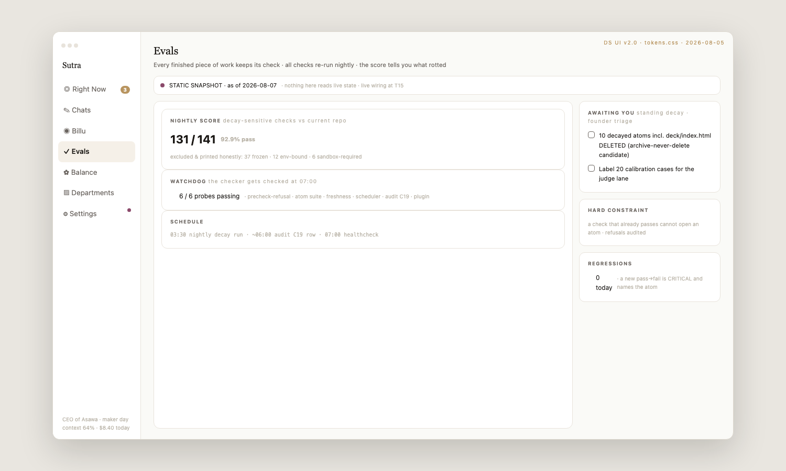

The whole industry has quietly agreed on the same diagnosis: an AI without a governed picture of your business will confidently make things up about your business. That diagnosis is not our insight — it is now the sales pitch of enterprise software’s biggest categories. Where everyone differs is the treatment.
| Category | What it does about the problem | What it does not do |
|---|---|---|
| Systems of record (ERP, CRM) | Hold the authoritative data | Do not know how work is done — the process lives outside them |
| Process mining | Watch your systems and reconstruct how work actually flows | Observe and score the process; do not run it, and do not check themselves |
| Ontology / AI operating layers | Build a mirror of the business so the AI stops hallucinating about it | The mirror describes work; the work still happens elsewhere |
| Workflow automation | Execute predefined flows | No model of the company around the flow — no notion of who owns what, or whether done was really done |
| Copilots / chat assistants | Produce output on demand | Remember nothing structural; every session re-explains the company |
The difference is easiest to see on one concrete job. Take a monthly payment reconciliation:
| A mirror of the business | Native | |
|---|---|---|
| What exists | A record that reconciliation happens, who does it, which systems it touches | The reconciliation itself, written as steps with a declared “done means this” check |
| When it runs | Somewhere else — a person, a script, a vendor tool | Through the written form; every run recorded |
| When something is off | The mirror finds out later, if the data flows back | The check fails, work stops, the owner is asked — with the evidence attached |
| Who audits it | A person, occasionally | The system re-tests its own playbooks on a schedule; a playbook that stops passing loses its standing |

Self-checking as a screen, not a promise: the app’s own Evals tab — nightly score with honest exclusions, watchdog probes, and a rule that a check which already passes cannot claim new work.
We tell the future as five chapters with proofs, not dates — a company’s recurring work running written and checked; then measurably improving; then departments trading work without human brokers; then whole efforts running reconstructably; then the system installing anywhere and growing on a stranger’s own record. The full story, with what’s proven so far and what each next step requires, is the Roadmap. How that spreads between companies — playbooks travel, your business never does — is Distribution.
If the thesis holds, the interesting consequence is not bigger companies doing more. It is small companies being properly run — the structure that used to require a floor of managers becoming something one person supervises. We run that experiment on ourselves daily: one operator, six companies’ operations. A load test, not a customer count — but it is the future this page bets on, at the smallest scale that can be tested.
One core idea for the next five to six years: interdisciplinary work becomes one of the most powerful sectors. Until now, putting several disciplines on one problem meant putting several people in one room. A lending product, for example, needs a credit analyst, a data scientist, a compliance lawyer and a behavioural economist. Groups like that have always moved slowly: each side learns the others’ vocabulary, every handoff waits for a meeting, and the combined idea arrives late or not at all. Work between fields has been rare. It was never low-value; it simply cost too much to coordinate.
LLMs change that cost. One model can work in many fields at once, so one person or a small team can carry several disciplines in a single line of work. They can translate between fields and test an idea from one field against the rules of another, in hours rather than across months of meetings. The slow part of interdisciplinary work was coordinating people, and that part is getting cheap. (Thesis: founder’s, 2026-09-26. Short-to-medium horizon; not yet measured.)
For Native, this is the same bet seen from the other side. When each discipline is a department, work between fields becomes a handoff between departments, and the third chapter above (departments trading work without human brokers) is where that gets tested. (Our inference.)
Authored 2026-08-18 for the front door (founder direction: industry fit + future, plain voice). Sources: world-model research 2026-08-10 (fenced as research; categories-first per codex), VERSIONS.md ladder, story-spine 2026-08-18. Reviewed against 6 codex objections (categories over names, one concrete example, bounded counter with counter-counter). Markets subsection added 2026-09-26 (founder direction: interdisciplinary work becomes a high-power sector as LLMs remove the coordination cost).